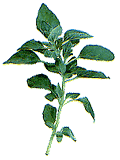

Исследователи из Массачусетского университета выявили, что сочетание экстрактов клюквы и орегано в комбинации с молочной кислотой ингибирует рост Listeria monocytogenes при хранении мяса и рыбы.

Listeria monocytogenes является возбудителем листериоза. Распространение заболевания связано преимущественно с заражением продуктов питания. Бактерия способна расти при низкой температуре, поэтому хранение продуктов в холодильнике не является эффективной мерой сдерживания роста микроорганизма. Высокая летальность при листериозе делает проблему профилактики заболевания чрезвычайно важной во всем мире. В последние годы наблюдается значительный рост заболеваемости, особенно среди лиц пожилого возраста на фоне сопутствующей патологии или иммуносупрессивной терапии. Большую опасность листерии представляют для беременных женщин и новорождённых. Они обуславливают выкидыши, мертворождения, а также развитие пороков плода, менингита, сепсиса и пневмонии у новорождённых.
Исследователи из Массачусетского университета выявили, что экстракты клюквы и орегано в сочетании с молочной кислотой ингибируют рост листерий в мясе и рыбе. Результаты исследования представлены в журнале Applied and Environmental Microbiology.
Орегано и клюква - растения, известные своими антимикробными свойствами за счёт содержания фенольного остатка. Благодаря этому они могут использоваться не только для улучшения вкусовых свойств пищи или в виде составных частей блюд, но и в качестве консервантов при сочетании с молочной кислотой. Но если клюква очень широко известна в России, то еще два десятилетия назад орегано не был известен в нашей стране. Орегано относится к семейству губоцветных, произрастает в центральной и южной Европе, странах Средиземноморья. По вкусу орегано напоминает майоран, более острый и немного горький. Добавляется в качестве приправы к мясным и рыбным блюдам, салатам, овощам.
Сочетание экстрактов орегано и клюквы (75% орегано и 25% клюквы) добавлялось к мясу и рыбе, а затем продукты хранили при 4°C. Отмечалось антимикробное действие комбинации, которое ещё более усиливалось при добавлении молочной кислоты.
Lin Y.T., Labbe R.G., Shetty K.
Inhibition of Listeria monocytogenes in fish and meat systems by use of oregano and cranberry phytochemical synergies.
Appl Environ Microbiol 2004; 70(9): 5672-8